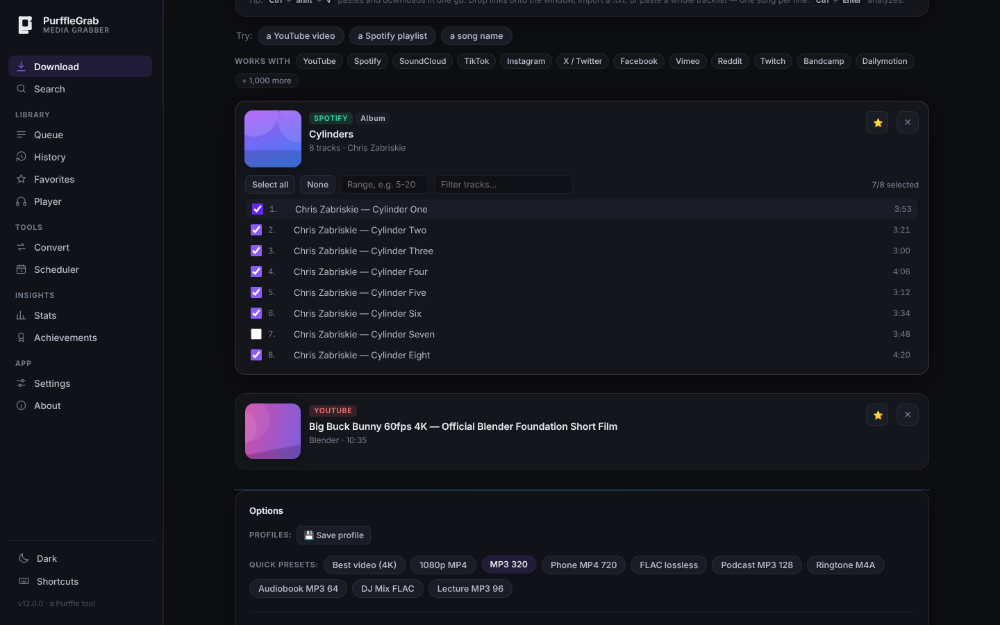
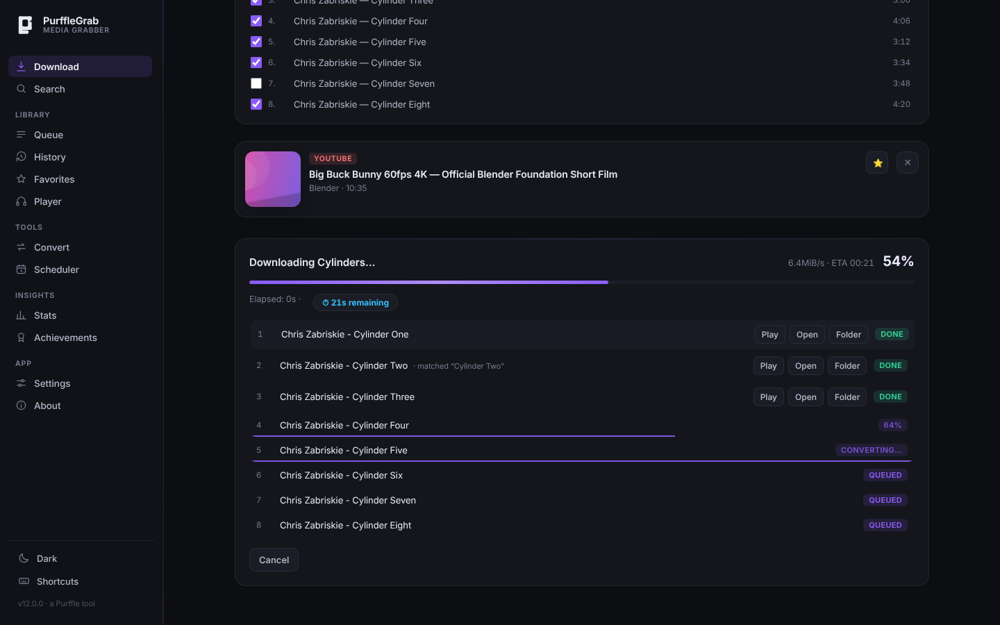
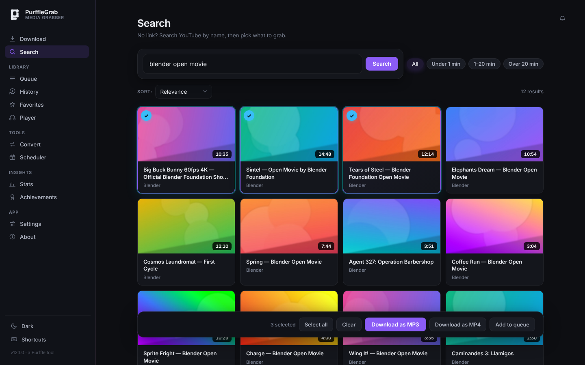
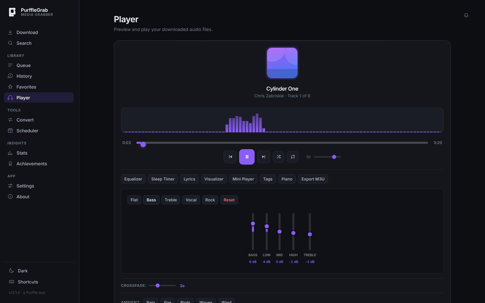
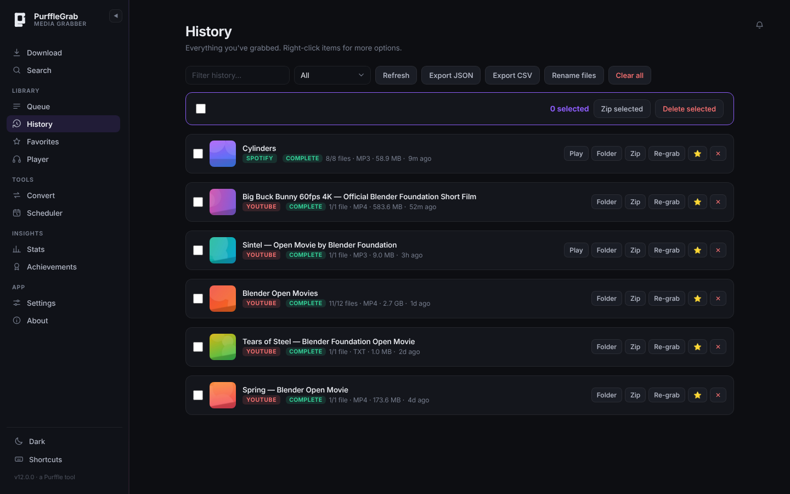
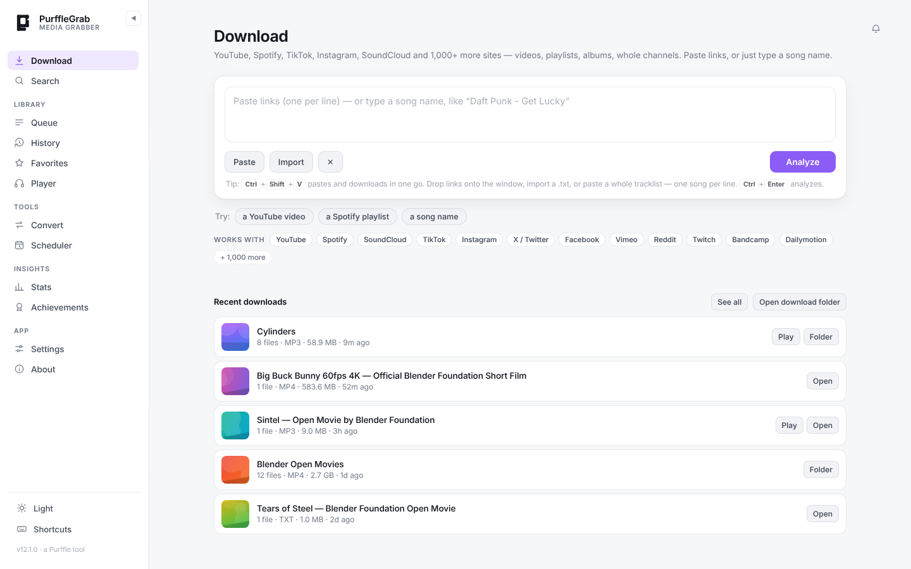

YouTube downloader
Videos, Shorts, playlists and whole channels — MP4 up to 4K, or MP3.
Paste a link — or just type a song name — and get MP3, FLAC or up to 4K MP4. Whole playlists, albums and channels, with cover art, tags and synced lyrics. Windows, Mac and Linux.
FFmpeg and yt-dlp built in · nothing else to install

PurffleGrab is a YouTube downloader, a Spotify playlist downloader, a TikTok and Instagram downloader and a SoundCloud downloader in one — powered by the yt-dlp engine, which reads well over a thousand sites.
Videos, Shorts, playlists and whole channels — MP4 up to 4K, or MP3.
Tracks, albums and playlists to MP3 or FLAC, with cover art and tags.
Save TikTok videos as MP4, or grab the sound as MP3.
Reels and video posts — use browser cookies for ones that need a login.
Tracks and sets, straight to MP3, M4A or FLAC.
Videos from posts, saved as MP4.
Public videos and Reels to MP4 or MP3.
Public Vimeo videos in the best available quality.
Reddit videos with their sound merged in.
Clips and past broadcasts (VODs).
Tracks and albums you can stream, to MP3 or FLAC.
Dailymotion, Bilibili, Mixcloud, news sites — anything yt-dlp reads.
No browser extensions, no sketchy converter sites, no accounts. Just a fast desktop app that keeps your files on your computer.
No link? Type “Artist - Song”, or paste a list of songs, one per line. PurffleGrab finds the best-matching upload for each.
Tracks are matched by length, title and artist, preferring the official studio audio over live versions, covers, remixes and sped-up edits.
Pick a quality and get exactly that — 1080p and below in the most compatible H.264, 4K and 1440p in the streams that actually carry them.
Paste a playlist, album or channel and tick exactly what you want — select all, a range like 5-20, or filter by name.
Lyrics that scroll along with the song in the player, and an option to save .lrc files next to your music for any player that supports them.
The engine updates itself and retries with a fresh copy when a site changes. Browser cookies and a proxy fix age-restricted and “not a bot” errors.
Press Play the moment a download finishes. Five-band equaliser, visualiser, crossfade, shuffle, repeat and sleep timer.
Convert many files at once between MP3, FLAC, M4A, WAV, Opus, OGG, MP4, MKV, WebM and MOV — or turn a clip into a GIF.
Grab a playlist again and only the new songs download. Schedule it daily or weekly to keep a folder mirrored, queue downloads, and resume cancelled ones where they stopped.
Save any video's spoken text as clean .txt, with or without timestamps — even for a whole channel.
Ctrl+Shift+V takes the link on your clipboard straight to a finished download. Copy a link in your browser and PurffleGrab offers to grab it.
No telemetry, no analytics, no ads, no account. Everything runs on your computer, and FFmpeg and yt-dlp come bundled.
The same three steps work for TikTok, Instagram, SoundCloud and every other supported site.
Copy a video, Short, playlist or channel URL from your browser. PurffleGrab notices a copied link and offers to grab it — or press Ctrl+Shift+V to download it in one step.
Paste one link or many and press Analyze. For playlists and channels you'll see every item, ready to tick or untick.
MP4 up to 4K, MP3 up to 320 kbps, FLAC, M4A and more — or tap a preset. Files land in your Music › PurffleGrab folder.
Spotify streams are protected, so PurffleGrab reads the playlist's track list and finds each song's best-matching audio — then tags it as if it came from the album.
Matches are scored on length, title and artist, preferring official studio audio — so you get the track, not a live recording or a cover.
Title, artist, album, track number and year, plus the album cover — written into every file.
Up to 100 tracks with no setup; add a free Spotify developer key in Settings to download your own playlists in full. Grab it again later and only the songs added since come down.
A playlist gets a folder named after it — or sort everything into Artist › Album folders with one checkbox.
How a free desktop app compares with browser extensions, online converter sites and paid downloaders.
| Feature | PurffleGrab | Browser extensions | Online converters | Paid desktop apps |
|---|---|---|---|---|
| Price | Free | Free / paid | Free, with ads | Often $20–50+ |
| Ads and pop-ups | None | Some | Many | None |
| Spotify playlists | ✓ | ✕ | Rarely | Sometimes |
| TikTok, Instagram, SoundCloud… | ✓ 1,000+ sites | Usually one site | A few | Varies |
| Type a song name | ✓ | ✕ | ✕ | ✕ |
| Whole playlists and channels | ✓ | Limited | ✕ | ✓ |
| Playlist sync (only new songs) | ✓ | ✕ | ✕ | Rarely |
| Real 4K video | ✓ | Rarely | Rarely | ✓ |
| Cover art and tags | ✓ | ✕ | ✕ | Sometimes |
| Synced lyrics (.lrc) | ✓ | ✕ | ✕ | Rarely |
| Built-in player and converter | ✓ | ✕ | ✕ | Sometimes |
| Keeps working when sites change | Self-updating | Depends on the store | Varies | Paid updates |
| Works offline from your desktop | ✓ | Browser only | Browser only | ✓ |
| Tracking | None | Varies | Usually | Varies |
The real app, version 12. Sample content shown is Creative Commons (Blender open movies, Chris Zabriskie).





A personal media tool, so you can keep media you're entitled to keep, on your own devices, offline.
Creators pulling back their own videos, podcasts and music — masters lost, originals gone, or archiving what you published.
Lectures, archive footage, government recordings and CC-licensed music are explicitly licensed for reuse.
Content you've paid for or have permission to keep locally — for flights, poor connections, or devices with no streaming app.
Archiving for study, and getting audio into tools streaming apps don't support — screen readers, hearing aids, DAWs.
What it is not for. Downloading copyrighted music or video you have no right to generally breaches the terms of service of the platform concerned and may infringe copyright where you live. PurffleGrab does not break Spotify's DRM — it reads public playlist information and matches tracks to audio already published elsewhere. You are responsible for how you use it.
No signup, no ads, no limits. Installs in a minute on Windows, Mac or Linux.